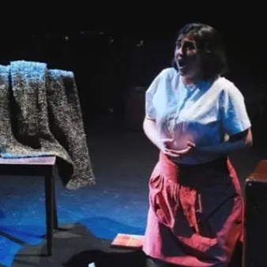

da mar 27 ott a mer 28 ott
Il Rossetti: Il diario di Anna Frank
È una proposta nel segno della multidisciplinarietà questa “mono-opera” che il compositore russo Grigori Frid - vissuto fra il 1915 e il 2012 - dedicò alla giovane vittima della ferocia nazista. “Il diario di Anna Frank” è stata tratta dal testo originale dallo stesso…
 Indicazioni
Indicazioni
- Costi e prenotazioni
- Costo non indicato · Prenotazione non indicata
- Programma
- Programma da verificare. Apri la fonte ufficiale per orari e possibili aggiornamenti.
- In caso di maltempo
- Nessuna indicazione specifica pubblicata.
- Note
- Acquisito automaticamente dalla fonte.
L’EVENTO
Descrizione completa
È una proposta nel segno della multidisciplinarietà questa “mono-opera” che il compositore russo Grigori Frid - vissuto fra il 1915 e il 2012 - dedicò alla giovane vittima della ferocia nazista. “Il diario di Anna Frank” è stata tratta dal testo originale dallo stesso compositore, che curò anche il libretto di questa sua creazione, divisa in 21 scene e concepita in due versioni: per soprano e orchestra da camera, e per soprano e pianoforte (come fu data per la prima volta a Mosca nel 1972 e come sarà eseguita anche alla Sala Bartoli). Lo spettacolo va in scena a Trieste nel contesto del Festival Victor Ullman, per la regia di Bruno Berger Gorski di cui il pubblico ha potuto apprezzare, due stagioni fa al Teatro Verdi, la “Lucia di Lammermoor”. Lo precede la preziosa esecuzione dell’aria “Ani Maamin” eseguita dall’Obercantor Shmuel Barzilai e da Davide Casali al clarinetto.
È quanto accade ne “Il diario di Anna Frank” dove il cuore non è la trama: le 21 scene si concentrano sulle riflessioni di Anna, rinchiusa nella casa nascosta. Accompagnato dal pianoforte di Almog Aharoni, il soprano Miriam Hajieva interpreta con intensità espressiva il ruolo di Anna Frank, simbolo di quanto atroce e cieco possa diventare l’uomo. Il messaggio intessuto nei suoi pensieri e conservato nel suo diario è vivo oggi più che mai. Sala Bartoli
Tipologia: Scena Contemporanea
Orario: vedi sito
Prevendita biglietti: VivaTicket, TicketOne e Teatro Rossetti
IL PROGRAMMA
Programma e orari
Appuntamenti raccolti dalle fonti elencate. Dove manca un orario, non è ancora disponibile in questa scheda.
Programma pubblicato
- Dal 2026-10-27 al 2026-10-28
INFORMAZIONI UTILI
Prima di partire
- Controllare la fonte prima di partire.
ORGANIZZAZIONE